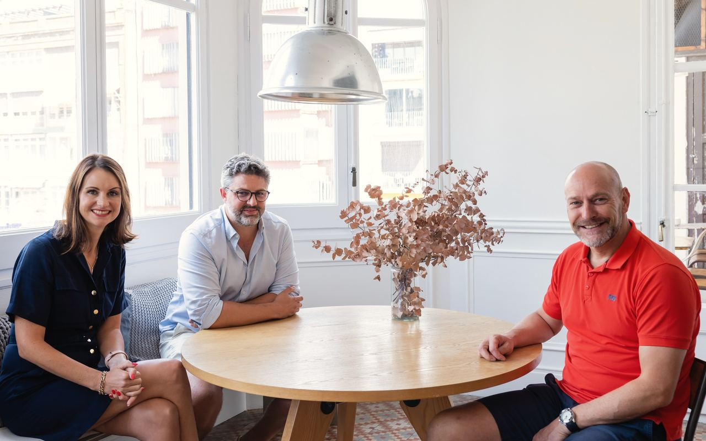

Your Growth Readiness Result
Your Responses Point to Structural Constraints Limiting Scale
This could mean several parts of the current model may become increasingly difficult to carry as the company grows.
More revenue may currently require more founder involvement, more management effort, more people or higher delivery cost at roughly the same rate.
At the same time, weaknesses in demand creation, decision-making or workforce planning may make it harder to know where to invest with confidence.
The business may still be performing well today but the real test is whether the current model can absorb more demand, complexity and technological change without the demands on people, cost and management increasing alongside it.
Trying to change everything at once is unlikely to help, so the first job is to identify which constraint is causing problems elsewhere.
Your Growth Readiness Profile
The result for each section shows which parts of the growth model are supporting progress and which may need more attention based on your answers.
Leadership Independence
- Strong Foundation
- Worth Attention
- Likely Constraint
Demand & Commercial Engine
- Strong Foundation
- Worth Attention
- Likely Constraint
Workforce & Capability Model
- Strong Foundation
- Worth Attention
- Likely Constraint
Future-Ready Business
- Strong Foundation
- Worth Attention
- Likely Constraint
Your Priority Area
This is the constraint most likely to be affecting other parts of the business and the best place to investigate first.
Your responses indicate that two or more areas are creating similar levels of pressure and may be connected.
Rather than treating them independently, it might be worth starting with the issue creating the most commercial or operational problems across the business.
Important decisions, opportunities or client issues still appear to depend heavily on founder involvement.
That puts a natural limit on growth because one person’s time, judgement and availability remain part of the operating model. You likely have senior people, but the question is whether they have enough authority, information and accountability to move the business forward without decisions repeatedly returning to the founder.
Start by identifying the decisions or situations that return to the founder most often, then work out whether the underlying issue is unclear authority, accountability, information, confidence or capability.
The founder remains important but is no longer required in places where the wider organisation should be able to operate independently.
There’s a good chance the business is commercially active without enough confidence in where future demand will actually come from, or which opportunities are genuinely worth pursuing. That can leave the business too dependent on referrals, vendors and personal relationships, while weak qualification or unreliable forecasting consumes time on opportunities that should have been challenged earlier.
Worth looking first at how opportunities are actually created and how they enter the pipeline, like how much future demand comes from deliberate market development and outbound activity, versus what simply arrives, and what evidence should exist before the wider business commits meaningful time and resources to it.
A stronger commercial engine creates demand more deliberately and gives leadership a clearer view of what is genuinely likely to convert.
The way work gets delivered still looks closely tied to adding more people.
That can cause cost, management load and headcount to increase almost as quickly as revenue. The focus should be on whether the work itself has been designed around the right combination of experienced people, AI, process and delivery model.
Identify where additional workload creates the greatest strain first, then ask what that work actually requires: experienced judgement, permanent capability, remote or flexible capacity, AI support, a managed service, a different process or some combination of these.
Start with the work rather than the vacancy.
Parts of the business may still be relying too heavily on today’s way of working. Critical knowledge may sit with individuals while AI may be used tactically without a clear view of how it changes the wider business. The organisation may not yet be designed around what the founder ultimately wants it to become.
Three questions are worth asking early: what important knowledge would be difficult to replace if a key person left, where AI or technology is likely to change how work gets delivered, and what would need to be true for the founder to step back, bring in investment, or pursue an acquisition or exit without weakening the business.
This helps build a company that can adapt without losing the expertise that made it successful in the first place.
Take the Growth Readiness Diagnostic to see your result for each section.
Start Your DiagnosticTalk Through Your Result
Your diagnostic gives you a first view of where the business is well prepared and where further attention may be useful.
If you want to pressure-test the result, book an introductory call with Godwin Austen so we can assess the problem area to determine if it needs immediate attention or further monitoring.
This diagnostic provides a directional view based on 12 common growth constraints. It is designed to highlight areas worth investigating rather than provide a full organisational assessment or valuation.